超越结果奖励：为搜索智能体构造与分配检索信用
《Beyond Outcome Rewards: Constructing and Assigning Retrieval Credit for Search Agents》由Wenyu Huang、Xinyu Hou、Pavlos Vougiouklis、Ruofei Lai、Jeff Z. Pan撰写，第一作者来自爱丁堡大学，合作机构为华为英国研发公司。论文于2026-10-07 14:48:47 UTC首次公开（arXiv v1），论文入口：arXiv:2610.10179。本文精读日期为2026-10-09（Asia/Shanghai），核验完整22页主文及附录全部图表；实验数字均为作者报告，未独立复现。
本轮未核验到独立官方代码或项目入口。原文第10页声明拟在接收后公开代码、训练模型和构造数据，这不等于当前已开源。论文研究如何利用语料绑定的中间证据监督搜索智能体，以及相同检索进展在整轨迹奖励和动作局部信用中为何产生不同学习效果。
最终结果奖励难以说明沿途搜索的贡献；即使轨迹取得不同程度的证据进展，也可能得到相同答案奖励。
1. 背景和问题
这句话对应论文引言的核心问题。搜索智能体面对复杂问题时，通常先生成查询、接收检索观察、更新推理，再决定是否继续搜索。训练时如果只在最后检查答案，那么一串有价值的搜索和一串完全无关的搜索可能都因为最终答案错误而得到零分。模型会知道整条轨迹失败，却无法辨认哪些步骤已经靠近正确证据。这种监督粒度与决策粒度之间的差距，是本文要研究的对象。
普通检索增强生成可以把一个问题交给检索器，再把若干返回段落交给大模型回答。多跳问答却常常不能一次写出充分查询：用户问的是某位人物父亲所属的王朝，模型需要先找到人物，再确认父子关系，最后查询父亲的归属。第一轮结果会揭示下一轮要找的实体，因此查询本身是依赖状态的行为。训练搜索智能体不仅要改善答案表述，更要学习下一步应该检索什么、何时已有足够依据、以及哪些查询带来的观察值得保留。
本文以可验证奖励强化学习为背景，具体采用组相对策略优化。对同一个问题采样多条轨迹，用最后答案的F1做相对比较。如果所有答案得分相同，组内标准差为零，最后结果不能给这些轨迹区分优劣。尤其在全部答案错误时，某条轨迹已经找到了两段关键证据，另一条还在检索错误实体，结果分数依然把两者看成同样失败。中间检索信号能让这样的差异进入学习，但它是否有效，不能只由“是否增加一个奖励项”决定。
作者把设计空间拆成两个相互连接的问题。第一，什么算进展：找到最终答案字符串、覆盖一段指定证据、还是覆盖满足前置关系的证据节点？第二，进展的信用给谁：给整条轨迹的全部可训练输出，还是只给真正执行并带来证据的查询？这两个维度在很多经验方案中容易被混在一起。例如一个中间奖励不奏效，可能是证据定义太弱，也可能是信用被广播给了大量无关输出。本文让同样数据、同样返回观察接受不同打分和分配方式，以观察这种耦合。
证据覆盖与答案匹配有明显区别。返回文档中出现正确答案的名字，并不必然意味着它回答了当前问题。一个王朝名称可能出现在许多无关历史条目中；字符串匹配可以便宜地检测到它，却无法解释问题涉及的父子关系。反过来，某段观察识别了问题中的人物，但还没出现最终答案，这一搜索对于多跳链条可能非常有价值。证据节点标注把这类中间事实显式记录，使得监督不必等到最终答案字符串出现才产生。
进一步的难点是依赖关系。假设问题有三个证据节点，顺序为人物识别、父亲确认、王朝归属。若第一轮检索同时返回第一与第三段证据，第三段虽然真实存在，但第二段缺失，整条推理链还没有闭合。可以立即奖励第三段的获取，也可以等父亲关系得到支持后再给第三段信用。两者并不是事实真假的区别，而是对“已经观察到有用信息”和“已经完成可连通推理”的不同取舍。本文用同一套证据与依赖标注实现这两种口径。
这个区别对终点打分和逐动作打分的影响并不一样。如果两条轨迹最终覆盖全部节点，累加的进展可能相同，但每一步收到进展的时刻不同。一个奖励推迟到第二步才释放，局部算法就会强化第二次查询；立即奖励则可能强化第一次查询。终点汇总掩盖了时序差异，逐动作信用保留了时序差异。因此“更严格的依赖结构更合理”不自动意味着“更严格结构能训练出更好的搜索策略”。严格性会改变信用到达的位置与大小，必须用实验验证。
作者为控制这些因素构造了带语料定位的问题，而没有把通用语言模型评判器当作每一步的奖励来源。训练问题具有参考答案、子问题、支持段落及依赖边，检索观察可以回映到固定语料分块。这使中间信号有明确来源，也让覆盖率可以在训练后用于轨迹分析。代价是需要人工或程序可验证的结构化证据，真实用户问题未必拥有这样的标注。本文展示的是一种受控研究框架，以及在该框架下奖励与信用分配的作用。
与此前利用结果优势重分配过程权重的方案相比，本文的局部残差直接加到查询词元优势上。结果优势为零时它仍可能存在，结果优势非零时它也可能反向抵消。因此这不是“正确轨迹给有用查询更多正奖励”的单向加权。标准化后的检索事件是有符号的，组内比平均差的事件可以得到负信用。这一点与非负的原始证据进展必须区分，否则会误把方法解释成只鼓励多搜文档。
论文的主要实证对象是Qwen3-4B在固定E5检索环境中的七个问答基准。它不是把检索编码器一起训练，也不是对开放互联网搜索排名做优化。智能体改变的是查询与回答策略，搜索环境的语料、编码器、每次返回数量保持一致。这有助于把结果差异归到训练信号，但也限制了外推：不同规模模型、不同检索质量、不断更新的网页及严格时延预算可能得到不同规律。阅读时应把受控实验发现与部署假设分开。
本文值得关注的原因是它给出了能被检验的解释链：有根据的检索事件是否改善答案，保持事件与来源查询对应是否更好，收益是否仅来自答案奖励打平的组，最后到底改善了证据获取还是证据使用。四个问题各自有控制实验，结果并未被压缩成一个“新奖励提高分数”的结论。对于研究搜索智能体后训练的人，这种拆分能帮助定位训练改动究竟在改变哪一层行为，也能避免用单个聚合分数替代机制分析。
2. 方法
2.1 构造语料绑定的问题与证据依赖
方法先解决监督数据从哪里来。作者从KILT句子中共同出现的实体对出发，用Wikidata关系确认可组合的语义联系，并保留每条关系的Wikipedia支持段落。链式组合倾向于一个主体只对应一个对象的关系，选中的主体与属性对必须有唯一对象，这样上一跳得到的对象才能成为下一跳主体。合取结构则要求两支各自拥有多个候选，但交集只剩一个答案，防止一支单独足以回答而另一支只是装饰。 这些关系生成子问题节点和有向前置边。单关系节点保存一段支持文字，合取节点可能需要两段或更多文字；只有所有必需段落都被观察到，节点才算覆盖。GPT-5.6 Luna用于生成根实体的描述性指代，不直接决定图结构和答案。问题模板、关系操作与依赖图决定分解及答案别名，生成模型提供不直接说出根实体名字的描述。输入是语料与关系，输出是问题、答案、子问题依赖以及定位到语料段落的证据记录。
训练集过滤无法定位到检索块的记录、检测到图捷径的记录和类别不匹配记录后，确定性采样14000题。另保留1200题分析训练后策略的证据行为。这里的“一跳到四跳”是标注图的结构，并不规定智能体必须搜索几次：一次查询可能返回多个节点，一段文字也可能支撑多个事实。语料按非重叠100词分块，索引保存归一化的768维E5表示，约有2900万块。节点匹配检查Wikipedia页面与段落一致，并检查某个答案提及的起始字符位置是否落在返回块中。 定位规则保证奖励来自指定语料，而不是模型自己在推理中宣称找到了证据。它也有边界：起始位置命中不要求整个答案提及或完整支持句落在块内，而且用文本前缀识别块并不能证明整块都已经完整暴露给模型。因此训练信号是一个明确但近似的证据检测口径。将其当作严格事实蕴含验证会夸大监督含义，构造数据时保存完整语料定位和轨迹时的可见观察非常必要。
2.2 从累计证据构造三种检索进展
最直接的信号是Cov，把所有子问题节点一视同仁，检查截至当前搜索累计观察覆盖了多少节点。原文核心公式（1）为：
符号解释：其中，$V_x$是问题$x$的子问题节点集，$D_{\le t}$是第$t$次搜索及之前完成观察的文档集合，$c_v$在节点全部必需支持段落都匹配时为一，否则为零。潜势$\phi$是已覆盖节点比例。它并不要求节点的前置证据已经出现，也不按关系难度加权。同一个节点重复被搜到不会提升比例，合取节点只搜到一支也不会被算成完整节点。 Cov-Dep在相同检测结果上增加依赖闭包。原文公式（2）是：
符号解释：其中，$\operatorname{pa}(v)$表示节点$v$的前置节点，$S_t$表示获得信用的节点集。这是从空集出发反复加入合格节点得到的最小不动点，不是允许任意循环自我证明的集合。根节点前置集为空。对于三节点链，搜到第一和第三节点时Cov为三分之二，Cov-Dep只有三分之一；后来搜到中间节点，闭包同时解锁中间和已经观察到的末尾节点。它约束的是授信时机，而不是强制检索必须按图序执行。
第三种AM只检查返回文档标题或正文是否包含原问题的参考答案别名。归一化包括转小写、去标点、冠词和重复空白；每篇文档独立匹配，不能跨文档拼接答案字符串。首次匹配后潜势变为一。它不需要子问题或证据位置标注，工程成本更低，但可能把无关上下文中的同名答案算成成功。查询文本、生成推理、最终答案和工具上限提示都不参与匹配。所有信号只读已经完成的工具观察，以防模型通过自己写答案而直接制造奖励。 累计潜势还不能直接说明某一次查询新获得了什么。作者把每次进展定义为超过历史最高潜势的非负增量，核心公式（3）为：
符号解释：其中，$X$表示Cov、Cov-Dep或AM，$e_t^X$表示第$t$次搜索带来的新进展，$u$遍历更早搜索位置。重复搜索已经获得的证据产生零事件，所有增量加起来等于最后达到的最高潜势。实现先将覆盖潜势保留四位小数再转成事件。Cov与Cov-Dep可以最终相同但事件序列不同；这种差异会在局部分配中影响哪个查询得到信用。
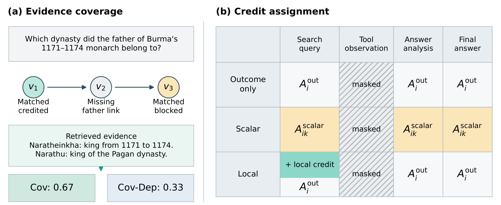
Figure 1左侧以缅甸国王父亲所属王朝的查询为例：已有文字识别在1171至1174年在位的Naratheinkha，也找到Narathu所属王朝，却没取得证明父亲关系的那一段。绿色节点已覆盖且可授信，黄色末尾节点已覆盖但被依赖闭包阻挡，所以Cov显示0.67、Cov-Dep显示0.33。右侧列出查询、工具观察、答案分析与最终答案四类词元：标量方案改变全部可训练生成词元的共同优势，局部方案只在查询上额外叠加信用。阴影的工具观察在全部方案中都被损失掩码排除，图中颜色表示信用支持区域而不是数值正负或大小。这个例子不是为了证明末尾事实无用，而是说明同一返回集合可以接受不同授信规则。后来补齐父亲关系时，依赖版本可一次释放两节点信用；因此图中差值来自时序门槛，不来自换用更严格的段落匹配器。因此两侧必须连起来读，证据分数只有经过信用规则才会形成词元级策略更新。
2.3 标量汇总与动作对齐局部信用
两种加入方法都保留GRPO的裁剪策略目标与KL正则，区别在传入该目标的优势。结果基线先对同一问题的多个轨迹终点F1标准化，得到一条轨迹所有可训练词元共享的结果优势。标量方案把各次检索进展加到终点奖励，再做相同组标准化，核心公式（4）为：
符号解释：其中，$i$索引同一问题的轨迹，$r_i$为答案F1，$\alpha=0.25$是检索系数，$k$是输出词元，$z$是组内标准化。这里改变的是整条轨迹的相对排名与优势，不额外区分查询和后续推理。累计检索奖励最多为0.25，所以答案F1为一的轨迹仍高于F1为零的轨迹，但答案分数接近时仍可能逆转排序。答案奖励全部打平时，检索差异也能产生标量优势，不能把这种能力只归给局部方法。 局部方案保持结果优势，同时在同一问题、同一搜索步的合格轨迹之间标准化检索事件。至少两个事件合格、事件方差非零、动作到查询词元的对齐有效，才会产生残差。作者先标准化单个信号，再标准化合并的局部组件；只有一个信号时两遍在数值上接近但不完全相同。核心公式（5）为：
符号解释：其中，$A_i^{\mathrm{out}}$为原结果优势，$E_i$是轨迹的合格检索动作索引，$Q_{it}$是实际执行查询的非空可训练词元集合，$L_{it}$是完整工具调用载荷的可训练长度，$\ell_{it}^X$是有符号局部信用，$\lambda=0.5$。完整载荷长度决定事件总质量，质量再均分给查询词元；因此总质量被保留，而每个词元的幅度与查询长度有关。非负的原始进展可以在组相对归一化后变成负信用；结果优势与局部残差可以同向，也可以相互抵消甚至改变总优势符号。
局部资格约束有实际含义。执行记录缺失、查询跨度无法识别、事件与跨度数组不一致、轨迹截断时，算法关闭局部信用，只留下结果优势；写了但未执行的查询也仅有全局监督。工具返回不是策略生成内容，不接受策略损失。组内比较用的是同问题同搜索步的合格子集，而结果优势用完整轨迹组。若忽略这些支持集合差异，把所有工具调用统一打分，就会改变原算法的更新对象。 附录公式（6）给出标准化的具体数值口径：
符号解释：其中，$m$为合格值个数，$\bar v$为这些值的均值，分母使用样本标准差并在根号外加$\epsilon$。不足两个样本、中心化值或标准差低于容差、结果非有限数时局部项为零。该处理避免常数组生成无意义梯度，也说明小奖励并不必然对应小优势：标准化会消除大部分尺度。附录公式（7）明确写出结果打平时的标量优势：
符号解释：其中，$c$是整个组共同的答案奖励，$I_i$是累计检索进展，$\bar I$和$s_I$分别为其组均值和样本标准差。只要超过数值容差，调小正的$\alpha$并不会同比减小标准化后的更新。因而实验的标量0.25与局部0.5不能直接解释成等强度奖励，也不能只用两者数值比较监督强弱。
作者最后对局部项做两类干预。置换实验在同问题同搜索步之间交换非零有符号事件质量，保持质量集合与支持位置，却破坏来源动作对应；质量在分配前交换再按接收查询长度分摊。门控实验分别只保留终点答案打平组、或只保留不同分数组的局部项。门控由完整组F1范围判断，删掉的局部项不会让剩余项重标定，结果优势与数据不变。这些干预帮助研究信用的来源和激活位置，但门控同时减少了总更新质量，因此不能把成绩差异全都归因于组类型。
3. 实验结果
3.1 相同检索环境与训练预算下的主结果
所有条件训练Qwen3-4B-Instruct-2507，使用相同14000题和固定E5-base-v2检索器，每个查询返回三个KILT语料块。每题采样五条轨迹，最终答案F1作为结果奖励，最后检查点以贪心解码评测。主基准共3197题，除Bamboogle为125题外，其余六个数据集各512题。Avg按题数做微平均，并非七个数据集简单等权平均；这也是理解论文“平均提高3.09”的必要口径。
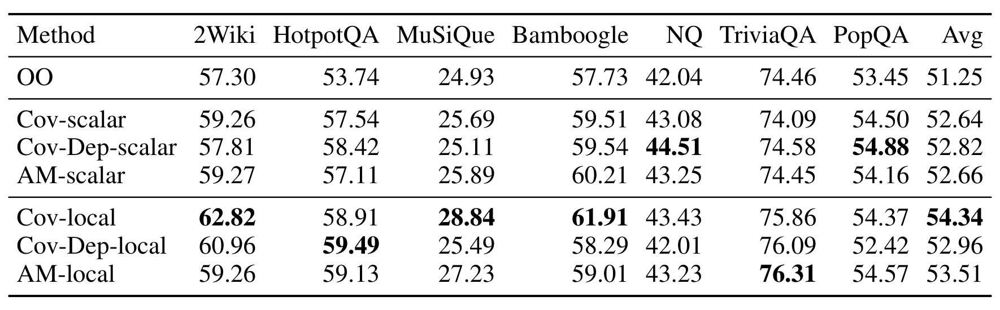
Table 1显示结果基线OO的Avg为51.25；Cov-scalar、Cov-Dep-scalar、AM-scalar分别为52.64、52.82、52.66。局部三者分别达到54.34、52.96、53.51，均高于各自标量版本，但提升幅度不同。Cov-local相对OO提高3.09个百分点，相对Cov-scalar提高1.70个百分点。依赖闭包在标量方案略有优势，在局部方案却比无闭包低1.38个百分点；同一证据信号在不同分配方式下的排序发生改变。数字支持“奖励定义与信用位置需要一起设计”，并不支持“依赖更严格必然更好”。
逐基准看，Cov-local在2Wiki、HotpotQA、MuSiQue、Bamboogle相对OO分别提高5.52、5.17、3.91、4.18个百分点，单跳三个基准的提升为1.39、1.40、0.92。它不是每一列的冠军：Cov-Dep-local在HotpotQA更高，AM-local在TriviaQA更高，PopQA最高的基本条件是Cov-Dep-scalar。对聚合最优和分布最优要分开判断；若部署问题以单跳事实查询为主，不能仅凭全基准平均就认定无依赖的覆盖局部信用一定适用。
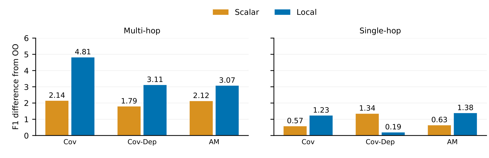
Figure 2按多跳与单跳两个组展示相对OO的差值。Cov-local多跳提高4.81个百分点，单跳提高1.23；AM-local对应为3.07和1.38。三个信号的局部形式在多跳上都超过标量形式，但Cov-Dep-local在单跳只提高0.19，低于其标量1.34。这里“多跳优势更大”是不同基准组成的组间观察，而非在同一数据集随机控制跳数所得的因果效果。Bamboogle样本少，组平均仍按每题权重汇总，应避免把柱高解释成四个多跳数据集等权平均。两组的结果基线不同：多跳为46.26、单跳为56.65，所以相同百分点提升对应不同绝对难度。Cov局部的额外收益在多跳更大，但AM在单跳略高于Cov，显示更细的证据标注并非每类任务都能换来额外回报。这里多跳优势不是只来自Bamboogle的小样本，它也在其余三个各有五百一十二题的基准上体现。
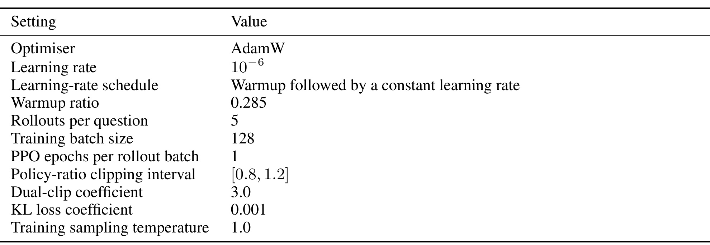
Table 2给出控制预算的实现基础：AdamW学习率为百万分之一，预热比例0.285，训练批次128，每题五次采样，每个采样批次只做一次PPO轮次，策略比例裁剪区间为0.8到1.2，双裁剪系数3，KL损失系数0.001，训练温度1。KL加在损失而非奖励中。作者使用VERL优化、SGLang采样，在两张80GB A100上训练；测量到的七个条件约耗28至31小时，包含采样、更新、周期验证与存档。该时间不是所有十三条件逐个报告的统一时延表，也不证明局部方法部署时更快。
工具接口还有一个容易遗漏的控制项：模型原生支持并行查询，但每次搜索调用只执行查询列表中的第一个，其余查询被忽略并在观察里提示，可在后续轮次重发。运行时独立限制四个助手轮次。这里测量的是固定工具预算下学到的行为，而非开放式无限搜索；字符串工具说明虽然说网络搜索，实际绑定的是固定KILT/E5环境。
3.2 局部信用是否需要对齐，是否只补救答案打平
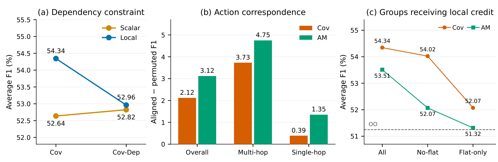
Figure 3的三个面板分别控制依赖闭包、事件与动作对应、以及哪些结果组接受局部项。对齐相比置换，Cov平均高2.12个百分点，AM高3.12；多跳差值扩大到3.73和4.75，单跳为0.39和1.35。这说明保持某个搜索及其观察贡献的对应有用。置换后Cov仍为52.22，高于OO的51.25，而AM降到50.39；破坏对应的影响与信号性质相关。右侧Cov全组54.34、no-flat为54.02、flat-only为52.07；AM全组53.51、no-flat为52.07、flat-only为51.32。局部监督的价值不能只归为全错组提供梯度。
这组控制避免了“给查询随便加一点梯度也一样”的解释，因为置换保持有符号质量集合。它还避免了把全部收益归到答案分数打平，因为只有打平组的条件明显较弱。不过门控减少信用质量且没有重新放大剩余项，所以“哪类组更有价值”与“接受了多少更新”仍纠缠。不能据此断言打平组无用：Cov删除这类组仍损失0.32，而只保留这类组也高于OO0.82。结果更像是局部信号在两类组都提供补充，只是不同分数组承担了更多观察到的收益。
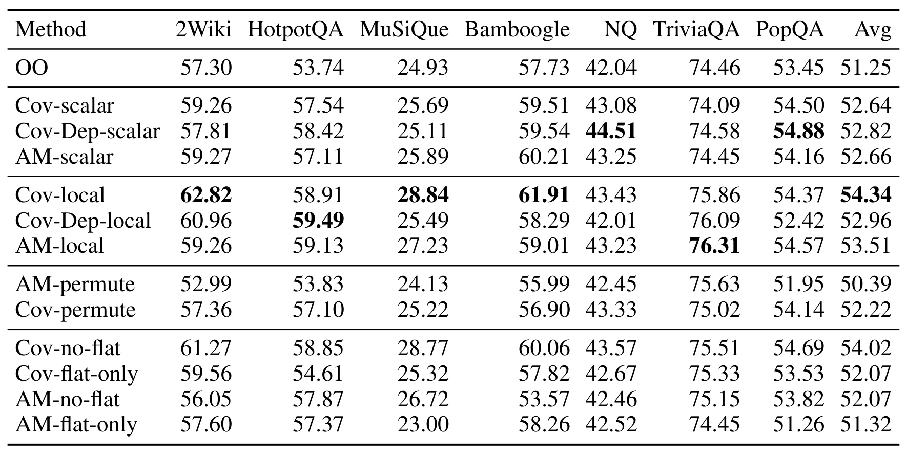
Table 6把置换与门控的逐数据集分数补全。Cov-no-flat的Avg54.02接近全组54.34，但2Wiki61.27低于全组62.82，Bamboogle60.06低于61.91；另一方面NQ与PopQA略高于全组。AM-no-flat的多跳表现下降更明显，2Wiki从59.26到56.05，Bamboogle从59.01到53.57。AM-flat-only在MuSiQue只有23.00，甚至低于OO24.93。门控不是一个跨数据集统一方向的规则，完整表提醒我们聚合结论背后存在任务异质性。该表也提供主文图柱的精确来源，避免只读差值而漏掉绝对基线。完整十三条件沿用相同数据、终点奖励和解码口径，变化主要发生在检索项与其支持区域。因此逐行比较应优先在同一信号内部做，而不是把不同信号、不同门控的最好列拼接成一个不存在的模型。
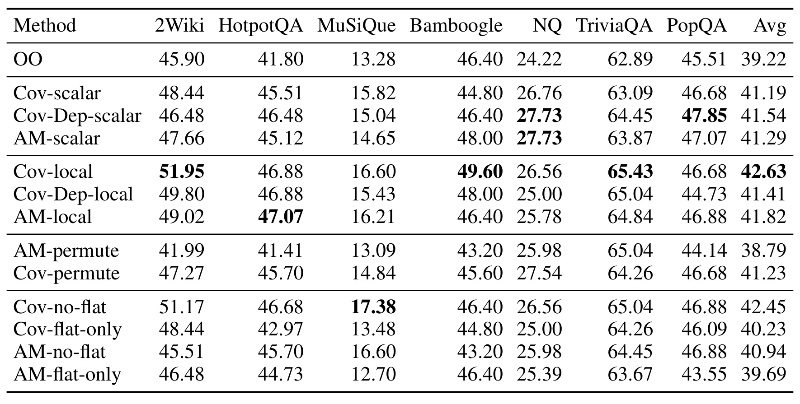
Table 7换成更严格的EM，OO为39.22，Cov-local达到42.63，提高3.41个百分点；Cov-no-flat为42.45，接近但低于全组，AM-local为41.82。Cov-Dep-scalar为41.54，高于Cov-Dep-local41.41，显示F1中“局部都比标量高”的基本结果并不完全延续到每个信号的EM。AM-permute低于OO，只有38.79。对于MuSiQue，Cov-no-flat的EM17.38高于Cov-local16.60，说明基准局部最优也会随评价指标变化。EM与F1大方向共同支持Cov-local总体收益，但不要把一种指标的排序当作全部正确性的排序。精确匹配要求整个标准化答案与某个别名一致，答案F1允许部分词元重合，两者关注不同错误。因此当分数方向一致却信号排序不同，应查看具体答案形式与错误类型，不能仅凭均值猜测模型知识增加。
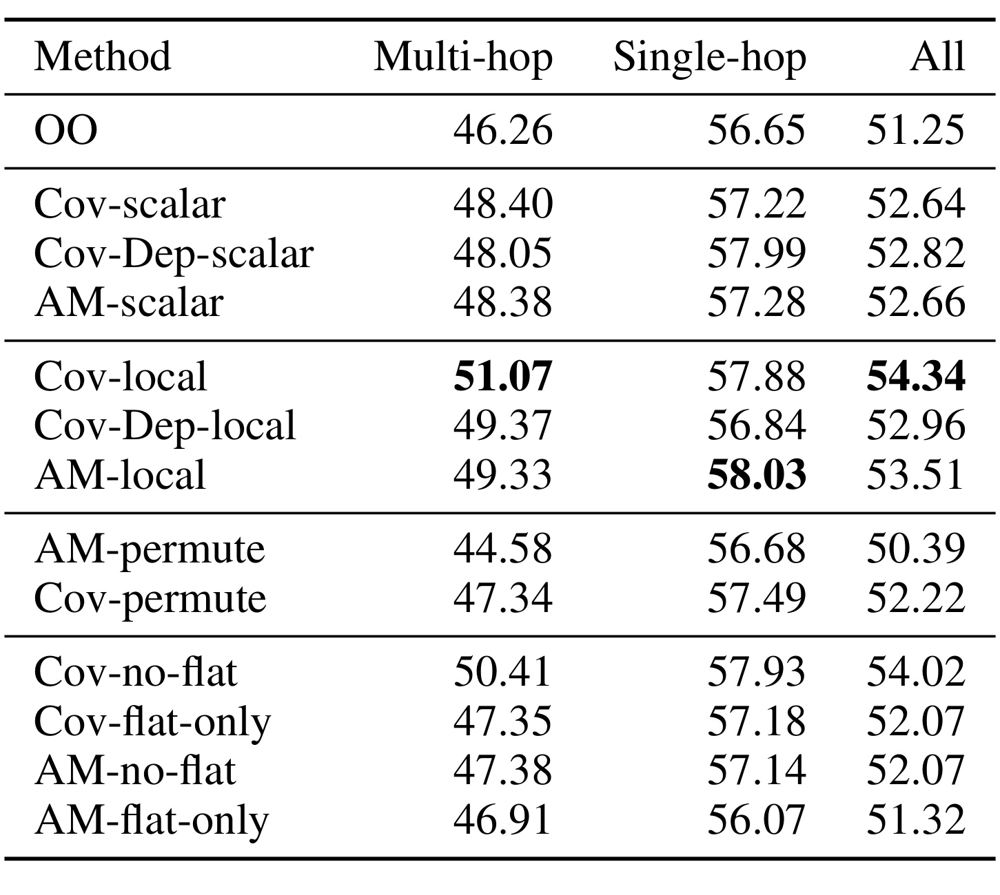
Table 8让主文分组柱有了完整绝对分数。多跳组包含1661题，单跳组1536题；OO为46.26与56.65，Cov-local为51.07与57.88，AM-local为49.33与58.03。局部Cov在多跳占优，局部AM在单跳略高。Cov-Dep从标量单跳57.99变为局部56.84，再次表明依赖约束与信用时序的交互并非只是一个总体均值现象。完整表中Cov-flat-only多跳47.35、单跳57.18均略高于OO，但仍低于全组。每组内部各题等权，组之间样本数不同，不能直接将两列简单平均复算全部Avg。多跳包含2Wiki、HotpotQA、MuSiQue和Bamboogle，单跳包含NQ、TriviaQA和PopQA。这个分组把基准类型与跳数绑定，不能把单跳和多跳列的差距当作在同题随机增加一跳的效果；答案别名及问题风格也随基准变化。
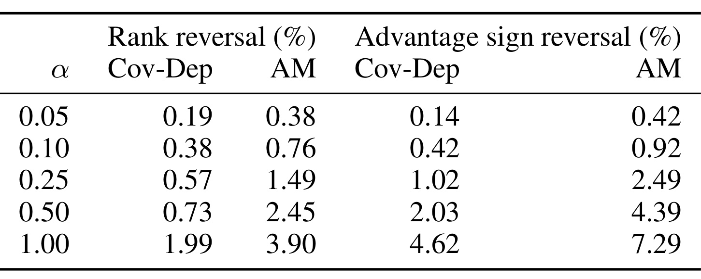
Table 3在保存的轨迹上改变标量系数，比较原F1不同的2617个组内对与2166个非零结果优势。系数0.25时，Cov-Dep和AM的排序逆转率为0.57%与1.49%，优势符号逆转率为1.02%与2.49%；系数提高到一时，两类逆转都明显增加。它支持所选比例大多保留结果排序，却不能证明全训练期间始终如此，因为这来自固定保存样本。作者还发现332个答案打平组中Cov-Dep激活63组、AM激活49组，183个全零F1组中两种信号各激活35组。标量信号同样能让平坦组产生优势，这是局部增益解释中必须保留的反例。这组检查用于选奖励比例，而不是用基准分数挑选最优系数。保存轨迹的平均累计进展在Cov-Dep为0.2124、AM为0.5393，两个信号即使共用系数也具有不同实际分布，归一化后的优势更不能仅用系数大小解释。
3.3 证据获取、数据构造与案例的边界
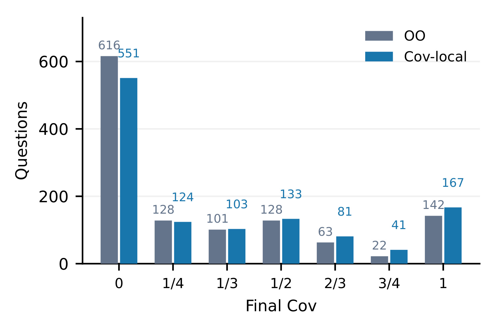
Figure 4使用相同1200道合成开发问题，OO零覆盖题为616，Cov-local降到551；完整覆盖题从142增到167。均值覆盖率由27.51%升到31.97%，而平均搜索次数从2.45到2.55。局部信用改善了获取标注支持的能力，增加并不限于“最终搜到答案”的二元变化，四分之三与三分之二覆盖的题数也上移。但完整覆盖仍只占少数，大量题完全没搜到指定证据。这是有限增益，不能把学习后的策略描述成已系统掌握所有多跳路径，也不能把搜索次数增加忽略后宣称无额外工具代价。柱状图展示人数而非各覆盖档内的准确率；它回答多少问题搜到了指定支持，另一张曲线才回答这些题回答得怎样。零覆盖下降65题、全覆盖增加25题，都以完整1200题作分母，避免只统计成功完成搜索的轨迹。全覆盖比例依然偏低，提示这一训练信号尚不能保证每个问题的完整支持都被获得。
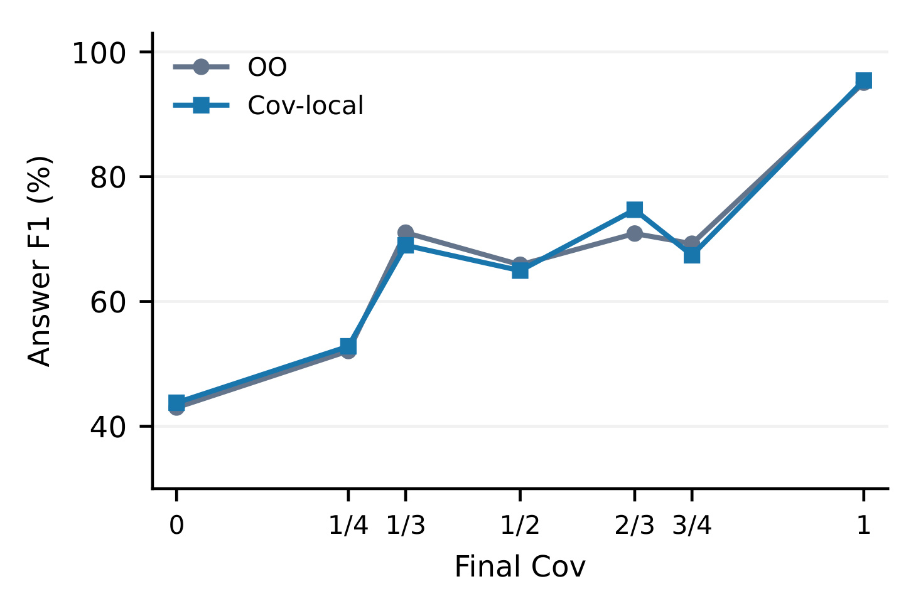
Figure 5显示高覆盖与高F1相关，两条策略的曲线总体相近；在相同覆盖档，Cov-local没有持续领先。作者因此谨慎判断主要变化可能是证据获取，较少看到证据使用改善的直接迹象。关键限制是每个策略按自己的最终覆盖分别分组，同一档位的题目ID可能不同，因此该图不控制问题难度，不是同题同证据下的阅读能力对比。高覆盖也可能是容易问题的结果。它可以与分布移动一起支持机制假说，却不能单独证明检索监督只影响查询、完全不影响后续推理。
覆盖统计保留所有1200题作分母，包括缺答案与截断轨迹。OO缺答案19条、截断12条，Cov-local分别20和16；一条不完整工具观察被排除覆盖，但已执行搜索仍计入搜索次数。这样处理避免只统计完成轨迹带来乐观偏差。另一方面，开发问题507题有部分或全部训练证据重叠，只693题的标注证据全部未见，因此这个分析不能替代独立的泛化检验。
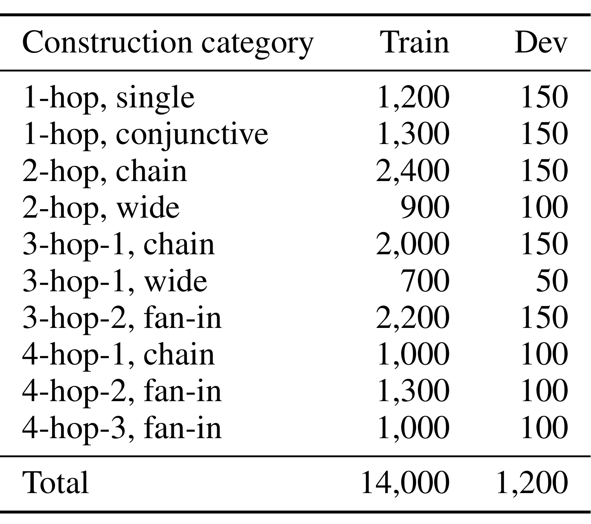
Table 4把14000训练题和1200开发题分成十类。训练一跳2500、二跳3300、三跳4900、四跳3300，其中一跳还分单证据1200与合取1300，复杂结构包括链、宽结构和扇入。开发并非每类同量：大部分为150题，部分为100或50题。类别考虑共享段落后的证据结构，而不是执行搜索次数，不能把四跳题理解为必须恰好执行四次工具调用。所有问题都以相同表面模板开头，来源关系和根实体描述限制了语言多样性；这套分布适合控制奖励实验，但与真实用户搜索问题的措辞和歧义仍有差距。来源池87171题中86681题具备采样资格，另外168题未通过分块定位、297题检测到图捷径、25题类别不匹配。过滤与确定性采样保证各条件共用构造题目，但不能保证留下的实体与关系分布代表实际搜索需求。类别分配不是模型预测结果，不能把它当作训练后实际执行的搜索策略分布。
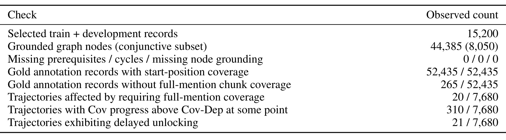
Table 5记录15200题、44385个节点，其中8050个合取节点，缺前置、环与缺定位都为零。52435条金标记录都满足提及起始位置覆盖，但265条没有任何单块完整容纳答案提及。在7680条训练轨迹上，要求完整提及会影响20条；Cov曾高于Cov-Dep的轨迹有310条，延迟解锁21条。可见依赖约束造成的事件差别在样本上并不普遍，却仍能改变训练表现。表中结构有效性保证图可运算，不能证明生成问题语义全面无误；起始位置检测也不是完整证据句被模型阅读的证据。
训练与开发没有精确问题ID或归一化问题重复，但225道开发题全部金标证据见于训练，282题有部分重叠，531题共享训练页面，606题共享答案实体。论文诚实披露这些重叠，所以开发轨迹更应当作为分布内行为分析。七基准曾参与开发决策，也不是完全隔离的最终盲测。代码和训练数据接收后拟公开，在当前阶段无法重新构造这些拆分、检查实体别名碰撞或复算检测误差；这些是阅读实验时的可信度边界。
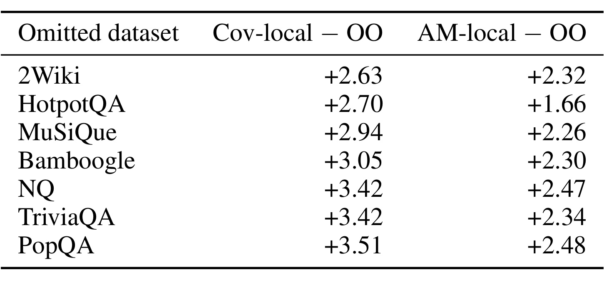
Table 9逐个移除七个基准并按余下题数重算。Cov-local相对OO的差值始终为正，范围2.63到3.51个百分点；AM-local也为正，范围1.66到2.48。去掉2Wiki时Cov差值最小，去掉PopQA时最大，说明主收益不只靠某一个基准，但数据组成仍影响幅度。这个敏感性检查比只给总平均更有说服力，不过它没有跨随机种子、模型规模或检索器重新训练，也没有置信区间。因而不能把始终正差值解释成统计上已经确定对所有任务稳健。该表沿用原始样本数作为剩余六集权重，移除Bamboogle仅删125题，移除其他任一集则删512题，所以各行不是同等规模的干预。保持正收益能排除单一基准完全驱动的解释，却不能排除整体开发选择带来的偏差。这些对照是在同一组最终预测上重新汇总，未移除数据集重新训练，反映的是评测混合权重敏感性。
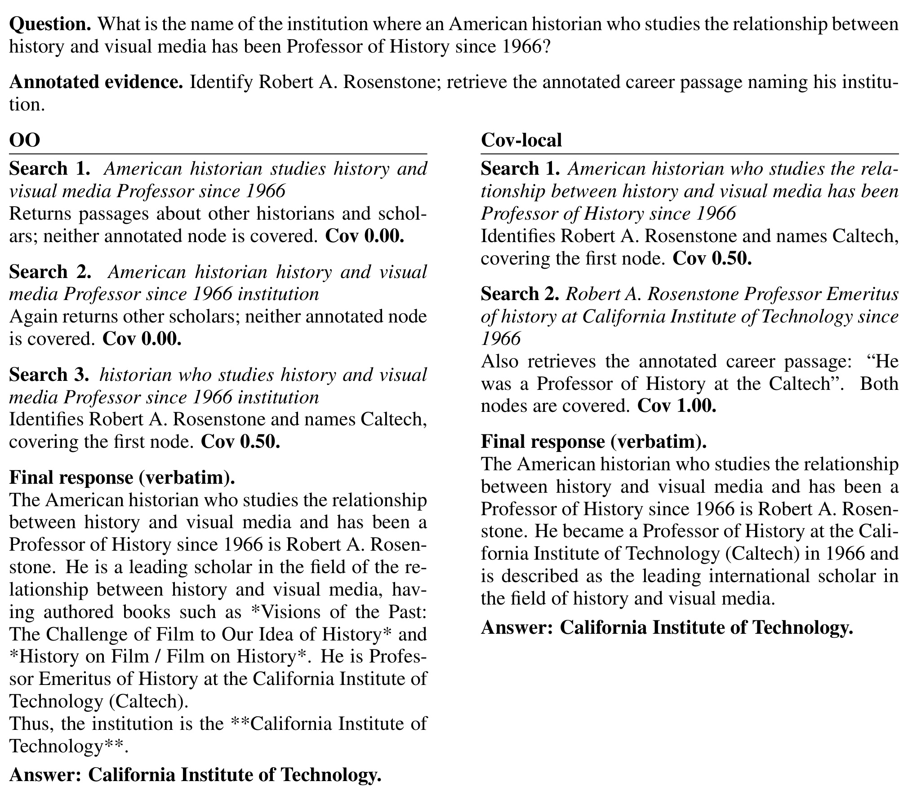
Figure 8询问研究历史与视觉媒体关系的美国历史学者自1966年任教的机构。OO前两次查询搜到其他人物，第三次才识别Robert A. Rosenstone及Caltech，覆盖一半节点；Cov-local第一次找到身份介绍，第二次取得标注职业段落，达到完整覆盖，且只搜两次。两者最终都答对，所以额外证据并未改变答案正确性。这恰好说明“覆盖标注支持”和“已经知道答案”不同。案例按满足完整多节点配对、局部全覆盖、OO未全覆盖且搜索更少的三个案例中ID字典序首例选出，没用正确性过滤；透明选择规则仍意味着它是筛选出的说明例，不能代表平均搜索次数会减少，平均数据反而略增。图内完整回答与查询属于原始案例对象，观察描述由原返回段落缩写，不能把所有图中文字当成逐字工具观察。新增职业段落提升了第二节点覆盖，第一段已经出现正确机构，因此这个例子也显示标注完整度与回答所需最小证据可能不同。
4. 总结
本文最有用的结论是，检索奖励必须与进入策略更新的位置一并研究。Cov、Cov-Dep和AM面对同样观察，区别在证据定义；标量与局部面对同样事件，区别在信用广播还是动作对齐。Cov-local在作者设置中获得最强整体F1，并有动作置换、结果组门控和证据覆盖分析支持，但依赖结构严格程度与答案质量没有简单单调关系。局部残差保持结果监督且允许有符号补充，使正确查询能够得到针对性更新，也允许表现差于同组的查询被抑制。
对于已有搜索训练系统，首先值得借鉴的是保留执行记录、观察来源和查询跨度，确保事件能够追溯到真正执行的动作。其次是把“证据被返回”“证据满足前置”“答案字符串出现”“最终回答正确”分别记录，不急于把它们加成一个不可解释分数。再次是对同样信号同时比较整轨迹与局部分配，并检查梯度支持区域、归一化与长度尺度。在系统实现中，这些控制往往比新增复杂奖励模型更能说明收益来源。
需要保留的局限至少有四项。第一，训练只覆盖一个4B模型和一个固定检索器，不能据此外推到更大模型或互联网环境。第二，合成题统一模板且依赖金标证据标注，奖励构造成本和真实问题迁移都未解决。第三，局部与标量使用不同系数及不同归一化支持集合，门控还改变更新总量，因此不是完全等更新强度的纯信用位置实验。第四，证据检测只需答案提及起点命中，未必完整读到支持句，可能高估真正可用的证据。第五，开发证据重叠与基准参与开发决策限制泛化证据，论文没有充分跨随机种子报告不确定性。
另一个风险是优化覆盖会鼓励取得更多标注节点，即使某些节点对最终回答已无必要。配对案例就展示了答案已出现在介绍段落中但额外职业段仍提升覆盖。平均搜索次数略增，说明策略可能以工具成本换取证据。若应用有严格时延或费用限制，应同步观察检索次数、返回词元、生成词元、执行墙钟和正确率，而不是只追覆盖率。原论文搜索计数不等于生成成本或墙钟性能，当前证据不足以断言整体性价比更高。
后续值得跟进的工作有三条主线。首先等待代码、模型及构造数据公开，复算动作资格、双遍标准化、载荷长度质量和置换质量守恒，检查实现是否与公式一致。其次以证据完全不重叠的拆分和不同检索器重复核心对照，区分检索环境、数据结构与模型规模各自贡献。最后让同一道问题在相同可见证据下比较回答，增加证据使用或引用一致性监督，真正检验模型是否更会运用资料，而不仅是更会把标注段落搜回来。
如果要进一步改善实验设计，应在相同实际优势质量或相同梯度范数下比较标量、局部和门控条件，同时独立控制事件时机与累计奖励幅度。再结合每步查询是否新增支持、是否补齐依赖、是否减少答案不确定性，才能回答依赖闭包为什么在局部形式中较差。本文已把这一问题暴露得很清楚：更复杂、更严格的奖励表示不会自动改善学习；每个具体来源、支持集合与信用时序都需要在可回溯轨迹上检验。